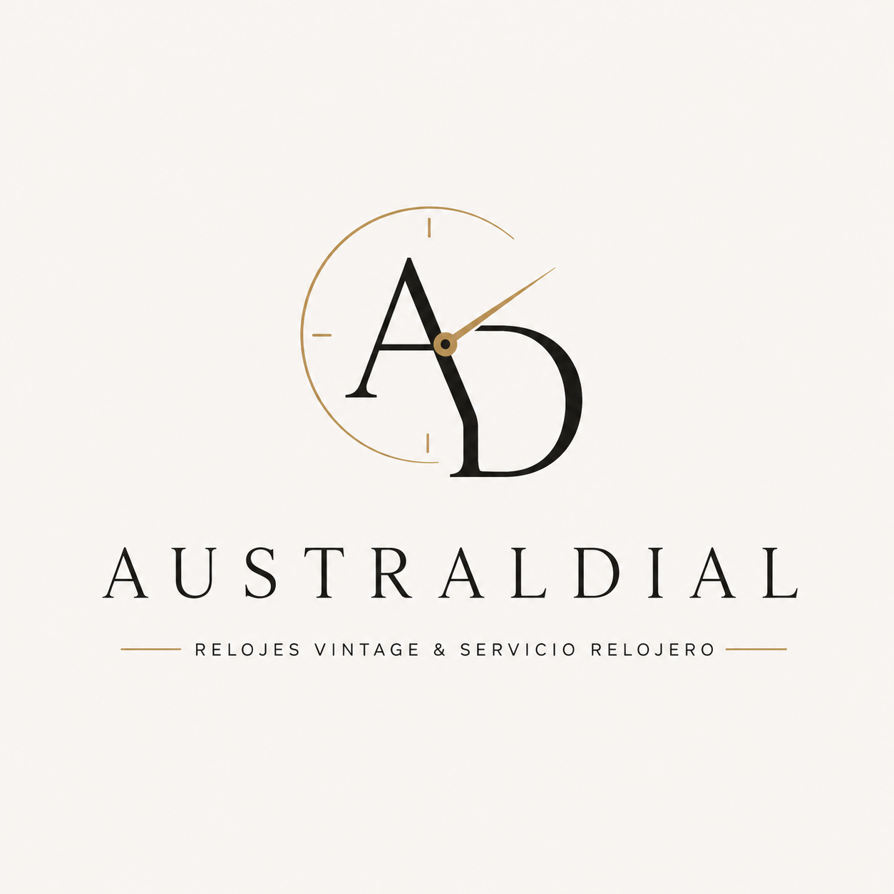
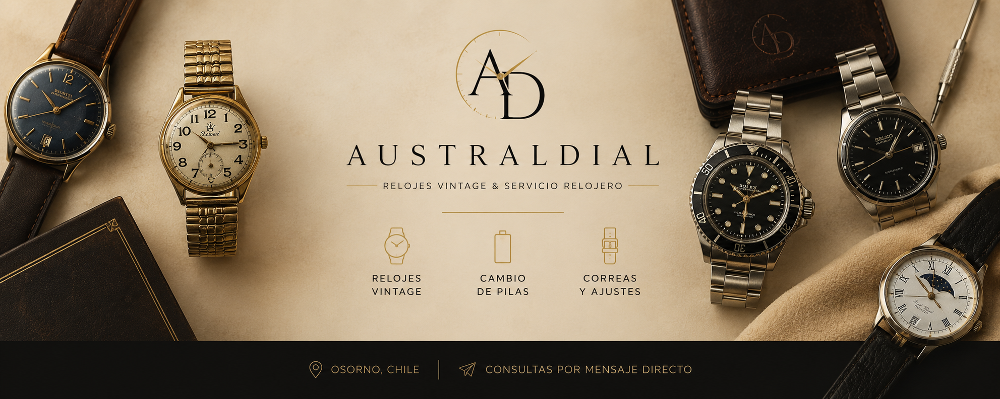

RELOJES VINTAGE & SERVICIO RELOJERO

Selección de relojes vintage, cambio de pilas, correas y servicio relojero en Osorno.
Contactar por WhatsAppSelección de piezas vintage y clásicas.
Servicio rápido para relojes quartz.
Correas de cuero, acero y silicona.
Síguenos para ver nuevos relojes vintage, restauraciones y novedades.
@australdial